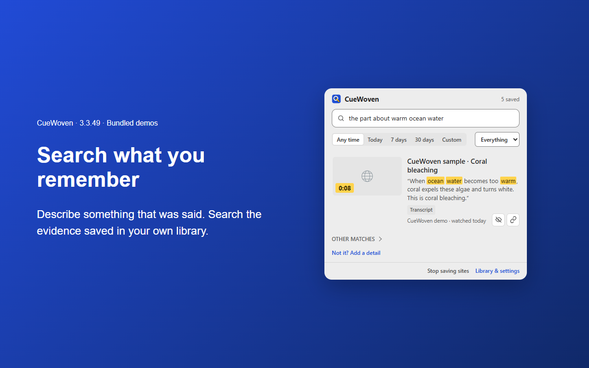

CueWoven
Search your history from a vague memory · Microsoft Edge · Beta
Remember a video or article but not its name? Describe what you remember — something that was said, something you saw, or roughly when — and CueWoven finds it. Your library is saved and searched on your computer with local AI models.
